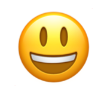

Sentiment Analysis

My experience so far has been
fantastic!
positive
The product its
ok I guess
neutral
Your support team is
useless
negative
MonkeyLearn
 The product its ok I guess
neutral
The product its ok I guess
neutral
 Your support team is useless
negative
Your support team is useless
negative